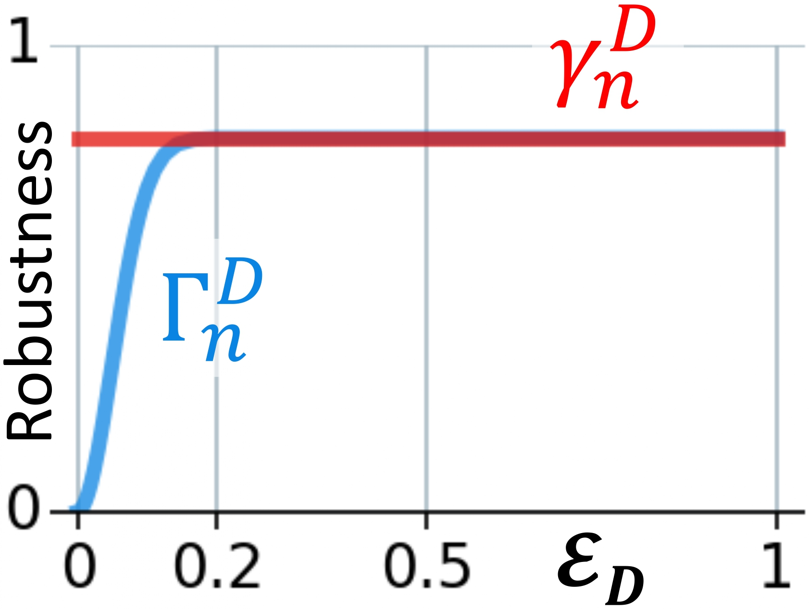
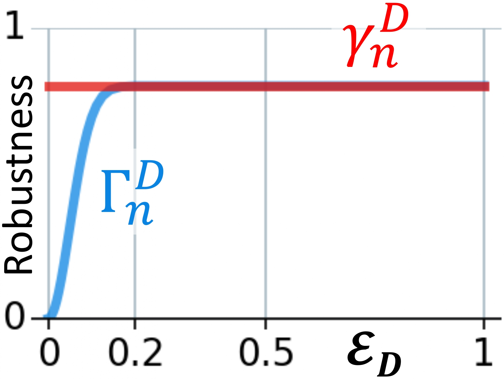

🚀 Weighted Aggregated Robustness
Problem A) Misleading high robustness: : If the model performs poorly on a challenging dataset i.e. performance close to random predictions, then downsampling will likely maintain this random prediction with minimal drop in accuracy, giving abnormally high robustness score.
▷ Solution: Improved Relative Robustness: We propose zeroing out robustness near random predictions.
 

Problem B) SAR overlooks datasets: When comparing models, their robustness scores are averaged across datasets (giving each dataset a score of 1, SAR). Ideally, the model rankings, after averaging, should stay consistent with individual dataset rankings. Model rankings on datasets like ImageNet overshadows the ranking of datasets like ImageNet-A and EuroSAT, which behave differently. This makes the final comparison exclude such datasests, as if these datasets aren’t present (left, below).
▷ Solution: Weighted Aggregated Robustness : We propose adjusting the dataset weights so that the model rankings after aggregation reflect each dataset fairly. Weights are optimized such that the correlation (Spearman) between the model rankings after the weighted average and individual dataset rankings are maxi- mized. (right, below)
👻 Proposed Technique
Our technique freezes the existing model weights and trains the trainable tokens "LR Tokens" (left) via the self-supervised technique "LR-TK0" (right) on synthetic dataset with any annotations and labels.
LR Tokens
▷ LR tokens are added to the frozen spatial patches (white) after patch generation, before each frozen transformer block, and class token as a final feature.

LR-TK0
▷ LR-TK0: Multi-scale training (only 1 shown for simplicity). Teacher (w/o LR tokens) generates \( f^T_{HR} \) (HR), Student (w/ LR tokens) generates both \( f^S_{HR}, f^S_{LR}\).

🤖 Zero-Shot High Resolution Dataset Synthesis
We use the diffusion model PIXART-α to generate synthetic HR images, via 7,000 randomly sampled captions from Conceptual Captions.
Samples generated using the captions randomly sampled from Conceptual Captions.
Multiple images per caption generated via different seeds.
Experimental Results
▷ LR-TK0 improvement on Foundation models: EVA-B/16 is EVA Meta-B/16: MetaCLIP-ViT-B/16 (2.5B), OC-B/16: OpenCLIP-ViT-B/16. Higher number ∝ better performance.
Baseline vs LR-TK0: Top-1 accuracy for EVA-CLIP-B/16 on 16×16.
▷ Left: #Images/Caption: Robustness vs. Size of diffusion generated dataset. Right: Baseline vs LR-TK0: Top-1 accuracy for EVA-CLIP-B/16 on 16×16.
BibTeX
@inproceedings{
pathak2025lrfm,
title={{LR}0.{FM}: {LOW}-{RESOLUTION} {ZERO}-{SHOT} {CLASSIFICATION} {BENCHMARK} {FOR} {FOUNDATION} {MODELS}},
author={Priyank Pathak and Shyam Marjit and Shruti Vyas and Yogesh S Rawat},
booktitle={The Thirteenth International Conference on Learning Representations},
year={2025},
url={https://openreview.net/forum?id=AsFxRSLtqR}
}